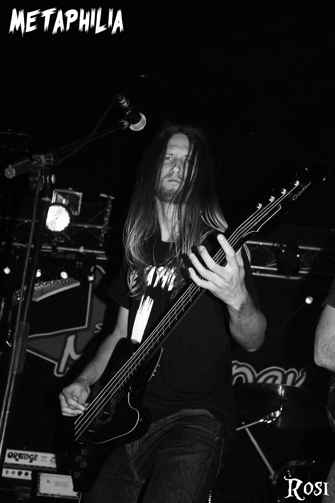
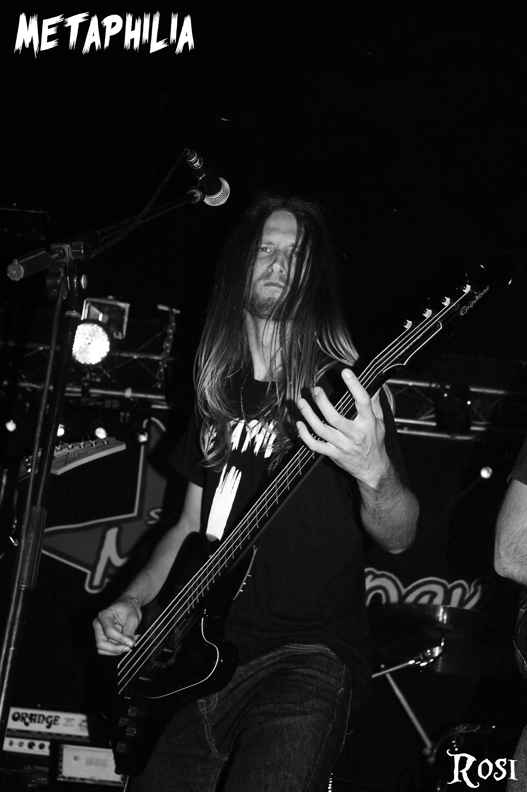

Sobre mí // About me
SPANISH
(ENG BELOW) Nacido el 27 de Noviembre de 1994 dentro de la provincia de Alicante/España en una pequeña
localidad llamada Benejúzar; Andrés García Larrosa(Andrius MW), es el bajista de la banda de Power Metal Cain's Dinasty y fundador de Z FIGHT.
El interés por la música le fue despertado a los 13 años cuando vio a su primo César Rodes García actuando en un concierto en su pueblo natal, aunque no fue hasta años más tarde cuando decidiría dar el paso de aprender música de forma autodidacta a los 16 años.
Poco después comenzó a hacer sus pininos en un par de grupos de la zona local con sus amigos.
El 27 de Diciembre de 2013 actuó como invitado especial con el grupo de Thrash Metal Réplica 1829. Banda que le impactó con su potencia desde el primer dia que la vio.
El 21 de Junio de 2015 publicó su primera DEMO a través del que por aquel entonces era su grupo; ZERO.
Poco después, el 11 de Agosto del mismo año fue cuando se incorporó a Metaphilia como bajista grabando posteriormente un EP para la misma banda el cual salió a la venta el 10 de Septiembre de 2016 coincidiendo con su actuación en la tercera edición del Niwala Fest.
Tan solo 7 días después, el 17 de Septiembre de 2016 Andrius MW hizo una colaboración en directo junto a la banda de Heavy Metal Traxilium, en Valencia, saliendo así de la provincia de Alicante por primera vez.
A principios de 2017 decide abandonar Metaphilia por motivos personales para centrarse así en lo que sería el primer trabajo de su nuevo proyecto; Z FIGHT; que vio la luz el 27 de Julio de 2017 con el primer single "Life´s Slave". Tras esto, poco después se hizo oficial su entrada en Metalbreath como bajista haciendo que la banda retomara actividades de nuevo.
Sin embargo su vuelta a los escenarios fue con Cain's Dinasty el 21 de Abril de 2018 en
el concierto de décimo aniversario del primer disco de la banda ; "Legacy of blood".
 

ENGLISH
Born on November 27, 1994 within the province of Alicante / Spain in a small
town called Benejúzar; Andrés García Larrosa (Andrius MW), is the bassist of the Power Metal band Cain's Dinasty, and founder of Z FIGHT.
His interest in music was awakened when he was 13 when he saw his cousin César Rodes García playing with his group on stage in a concert in his hometown, although it was not until years later when he decided to take the step of learning self-taught music at 16 years old. Shortly after he began making his first appearances in a couple of groups in the local area with his friends.
On December 27, 2013 he acted as special guest with the group of Thrash Metal Replica 1829. Band that impacted him with his power from the first day he saw her.
On June 21, 2015 he published his first DEMO through which at that time was his group; ZERO
Shortly after, on August 11th of the same year, he joined Metaphilia as a bassist, later recording an EP for the same band which went on sale on September 10, 2016 coinciding with his performance in the third edition of Niwala Fest.
Only 7 days later, on September 17, 2016 Andrius MW made a live collaboration with the band of Heavy Metal Traxilium, in Valencia, leaving the province of Alicante for the first time.
At the beginning of 2017 he decided to leave Metaphilia for personal reasons to focus on what would be the first job of her new project; Z FIGHT; that saw the light on July 27, 2017 with the first single "Life's Slave". After this, shortly after his entry into Metalbreath became official as bassist causing the band to resume activities again.
However, his return to the stage was with Cain's Dinasty on April 21, 2018 in
the tenth anniversary concert of the band's first album; "Legacy of blood".